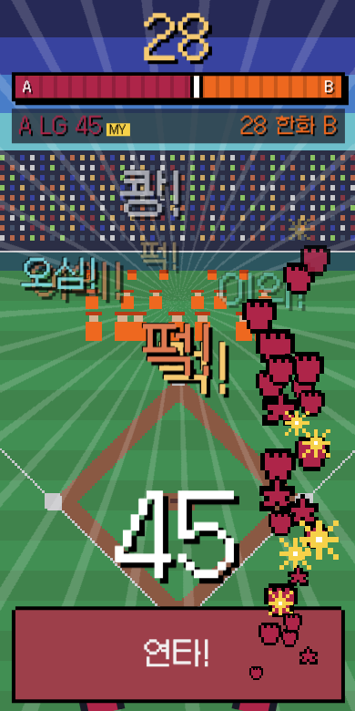
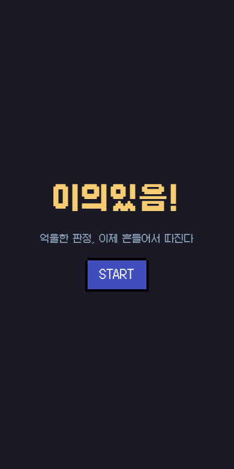
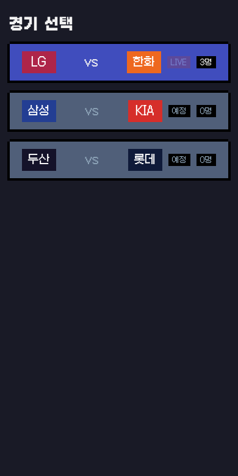
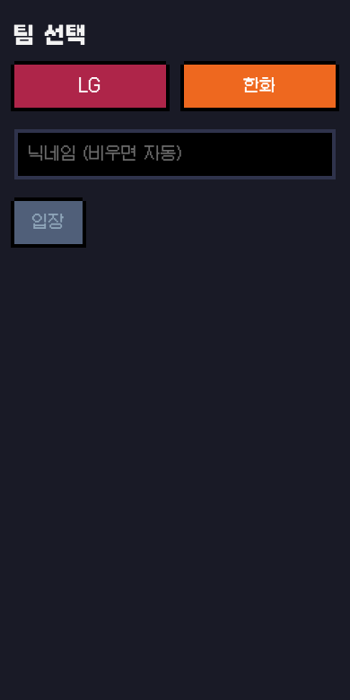
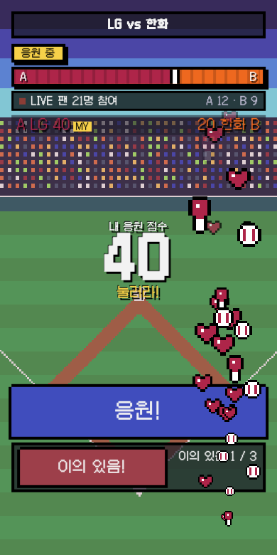
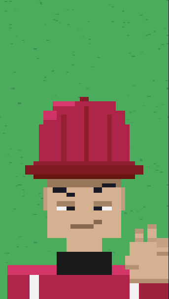
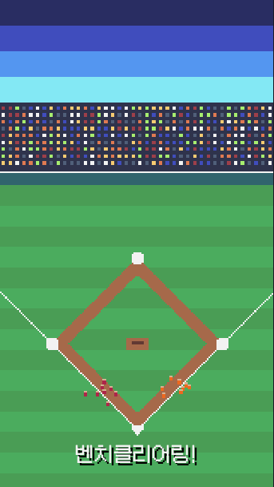
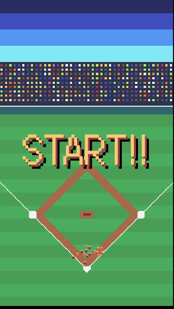
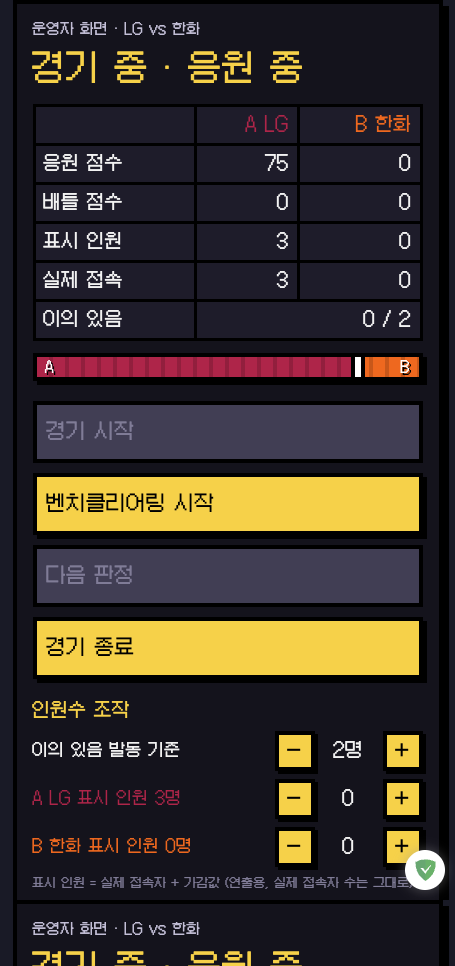

이의있음!
억울한 판정, 이제 흔들어서 따진다
세상에서 가장 쓸데없지만, 쓸모 있는 스포츠 서비스

야구를 보다가 이런 순간이 온다
"오심이다!"
그런데 팬이 할 수 있는 건 두 가지뿐이다.
그 순간, 팬이 직접 참전한다
QR로 입장
전광판의 QR을 찍고 응원할 팀을 고른다. 앱 설치도 가입도 없다.
[이의 있음!]
억울한 판정이 나오면 버튼을 누른다. 10초 안에 기준 인원이 모이면 벤치클리어링이 시작된다.
흔들어서 승부
양 팀 팬이 10초 동안 휴대폰을 흔든다. 더 많이 흔든 팀 팬이 이긴다.
판정은 바뀌지 않는다. 하지만 팬끼리는 확실하게 승부가 난다.
평소엔 응원, 억울하면 벤치클리어링
경기 내내 누적
실제 경기 데이터와 연동하지 않아서, 경기 시작과 종료는 운영자가 버튼으로 바꾼다.
들어와서, 팀 고르고, 흔들어 응원

홈

경기 선택

팀 선택

응원 중
응원 화면: 밀어내기 바 · 내 응원 점수 · 아래에 [이의 있음!]과 n / 기준
기준 인원이 모이면 모든 폰에서 동시에

노려보기
2초

벤치클리어링
2초

START!!
1초
흔들기 배틀
10초
끝나면 결과: 팬심 판정문 · 팀 점수 · 내 기록 · MVP 흔들러 TOP 3 → 15초 뒤 다시 응원으로
큰 화면은 보여주고, 운영자가 경기를 조종한다

전광판 입장 QR, 팀별 인원, 밀어내기 바, 이의 있음 게이지

운영자 경기 시작·종료, 벤치클리어링 시작, 기준 인원, 배틀 시간
세상에서 가장 쓸데없지만, 쓸모 있는
쓸데없다
- 아무리 흔들어도 판정은 안 바뀐다
- "오심 인정! LG 팬 승리" 판정문은 가짜다
- 이겨도 받는 건 없다
쓸모 있다
- 억울함을 풀 곳이 생긴다
- 관중석 전체가 같은 순간에 같이 움직인다
- QR 하나면 된다. 설치도 가입도 없다
서버 코드 없이, 웹 주소 하나로
실시간 동기화
접속 인원, 점수, 경기 상태를 모두 DB 구독으로 맞춘다. 탭을 닫으면 인원에서 바로 빠진다.
같은 순간에 같은 장면
서버 시각과의 차이를 보정해서, 컷신과 배틀이 모든 폰과 전광판에서 같이 넘어간다.
배틀은 한 번만 시작
여러 명이 동시에 기준을 넘겨도 transaction으로 한 번만 시작된다.
흔들기 감지
가속도 변화량이 기준을 넘으면 1점. 0.3초마다 모아서 저장한다.
센서가 없어도 참여
권한을 거부했거나 센서가 없는 기기에는 연타 버튼이 나온다.
이미지 파일 없는 픽셀
선수, 구장, 컷신을 문자열 스프라이트로 저해상도 canvas에 그려서 확대한다.
이번엔 야구 한 경기, 다음은
판정 순간 자동 감지
실제 경기 데이터와 연동해서, 논란 판정이 나오면 [이의 있음!]이 저절로 열린다.
다른 종목
농구, 배구, 축구. 지금은 "준비중"으로만 보인다.
시즌 누적 랭킹
어느 팀 팬이 한 시즌 동안 가장 많이 이겼는지.
결과 카드 공유
"오심 인정! 우리 팬 승리"를 그대로 SNS에.
지금 같이 해봅시다
jeckathon.web.app/game/kbo-lg-hh
- 1QR을 찍는다
- 2LG나 한화를 고르고 입장
- 3[흔들기 준비]를 눌러 센서를 허용
- 4경기가 시작되면 흔들어서 응원
- 5억울하면 [이의 있음!]
실제 판정은 바뀌지 않습니다 :)